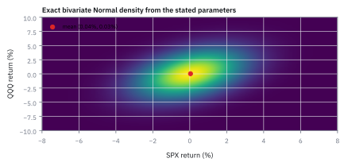

8.4 The Multivariate Normal Density
multivariate Normal คือระฆังกลมของตัวแปรอิสระที่ถูกยืดและเอียงด้วย matrix จน covariance เป็น $\Sigma$ ตามต้องการ
ทุกเย็น ฝ่ายความเสี่ยงของกองทุนแห่งหนึ่งไล่ดูผลตอบแทนของหุ้นที่กองทุนถืออยู่ งานของเขาคือตั้งธงเมื่อวันไหน “ผิดปกติ” เพราะวันที่ผิดปกติอาจแปลว่าแบบจำลองความเสี่ยงที่ใช้อยู่ไม่ตรงกับตลาดแล้ว
วันนี้เขาดูหุ้นสองตัวที่ปกติขึ้นลงตามกันเกือบตลอด ของที่รู้ (ตัวเลขสมมติ):
- ผลตอบแทนรายวันของแต่ละตัวมีค่าเฉลี่ย $\mu=0$
- แต่ละตัวมี SD $\sigma=2\%$ เท่ากัน SD (standard deviation) คือขนาดการกระจายของผลตอบแทนรอบค่าเฉลี่ย
- correlation ของสองตัวคือ $\rho=0.82$ correlation เป็นตัวเลขตั้งแต่ −1 ถึง 1 ที่บอกว่าสองตัวขึ้นลงด้วยกันแค่ไหน 0.82 แปลว่าเกือบจะขึ้นด้วยกันลงด้วยกัน
- แบบจำลองที่ใช้คือ joint Normal: ผลตอบแทนแต่ละตัวเป็นระฆัง Normal และสองตัวรวมกันเป็นระฆังสองมิติ หน้านี้จะสร้างระฆังนี้ทีละชิ้น
- วันนี้ตัวแรกขึ้น $+3\%$ ตัวที่สองลง $-3\%$
ถ้าดูทีละตัว แต่ละตัวห่างค่าเฉลี่ย $3\%/2\%=1.5$ SD ซึ่งเป็นวันธรรมดา เพราะระฆัง Normal ตัวเดียวให้วันที่ห่างเกิน 1.5 SD (ทางใดทางหนึ่ง) ถึงราว $2\times(1-0.933)\approx13\%$ ของวัน โดย 0.933 คือโอกาสที่ standard Normal (Normal ที่มีค่าเฉลี่ย 0 และ SD 1) มีค่าไม่เกิน 1.5 อ่านจากตาราง Normal
ฝ่ายความเสี่ยงควรตั้งธงว่าวันนี้ผิดปกติไหม?
ลองตอบก่อนเปิดเฉลย
ควรตั้งธง เพราะแบบจำลองบอกว่าสองตัวนี้เกือบจะขึ้นลงด้วยกัน วันที่สวนทางกันจึงแปลกมาก ถึงแต่ละตัวจะดูธรรมดาก็ตาม
หน้านี้จะสร้างระยะที่คิด correlation ด้วย ชื่อ Mahalanobis distance แล้วคำนวณให้ดูทีละขั้นในขั้นที่ 8 ผลคือระยะยกกำลังสอง $q=25$ หรือระยะ $d=\sqrt{25}=5$ โอกาสที่วันหนึ่งจะไกลจากค่าเฉลี่ยอย่างน้อยเท่านี้ (ทิศไหนก็ได้) คือ
คือหนึ่งวันในราว 268,000 วันทำการ ตลาดหุ้นสหรัฐเปิดซื้อขายราว 252 วันต่อปี (365 วันหักเสาร์อาทิตย์และวันหยุด) จึงเท่ากับ $268{,}000/252\approx1{,}063$ ปี หรือราวหนึ่งครั้งในพันปี
เทียบกับวันที่ทั้งสองตัวขึ้น $+3\%$ พร้อมกัน วันนั้นได้ $q\approx2.47$ และวันที่ไกลอย่างน้อยเท่านี้เกิดได้ราว 29% ของวัน ขนาดการขยับรายตัวเท่ากัน แต่ทิศที่ขยับร่วมกันต่างกัน ข้อควรระวัง: ตัวเลข $3.7\times10^{-6}$ ไม่ใช่โอกาสที่จะได้จุด $(3\%,\ -3\%)$ พอดี และไม่ใช่ “5-sigma” ของตัวแปรเดียว
ภาพรวมก่อนลงสูตร
หน้าก่อน ๆ สรุปผลตอบแทนหลายตัวด้วยสองอย่าง คือ vector ค่าเฉลี่ย $\mu$ กับ covariance matrix $\Sigma$ (ช่องแนวทแยงคือ variance ของแต่ละตัว ช่องนอกแนวทแยงบอกว่าสองตัวแกว่งไปด้วยกันแค่ไหน ดูmean vector และ covariance matrix) แต่สองอย่างนี้ยังไม่บอกว่าผลตอบแทนชุดหนึ่งเกิดยากหรือง่ายแค่ไหน คำถามเปิดต้องการ distribution ทั้งก้อน หน้านี้จึงสร้าง distribution ที่ใช้กันมากที่สุด คือ multivariate Normal (MVN)
Normal distribution ตัวแปรเดียวคือระฆังที่มีศูนย์กลาง $\mu$ และความกว้าง $\sigma$ ส่วน MVN คือระฆังหลายมิติ ลองมองระฆังสองมิติจากด้านบน แล้วลากเส้นผ่านจุดที่สูงเท่ากัน (เหมือนเส้นชั้นความสูงบนแผนที่) จะได้วงรีซ้อนกัน วงรีเอียงไปทางที่สองตัวขึ้นลงด้วยกัน และยืดยาวในทิศที่ผันผวนมาก
วิธีสร้างที่เข้าใจง่ายที่สุดมีสามขั้น:
- เริ่มจากตัวแปรสุ่มอิสระ $Z$ ที่เป็น standard Normal (ค่าเฉลี่ย 0, SD 1) ระฆังของมันกลมเท่ากันทุกทิศ
- คูณ $Z$ ด้วย matrix $L$ ที่เลือกให้ $LL^{\mathsf T}=\Sigma$ การคูณนี้ยืดและเอียงวงกลมให้กลายเป็นวงรี
- ย้อนรอยการยืดนั้นกลับ จะได้สูตร density ซึ่งมีสองชิ้น: ระยะ Mahalanobis บอกว่าจุดอยู่บนวงรีวงไหน และ determinant (ตัวเลขที่บอกว่า matrix ยืดพื้นที่กี่เท่า) ปรับความสูงของระฆังให้โอกาสรวมยังเท่ากับ 1
ตัวอย่างหลักของหน้านี้คือ SPX กับ QQQ SPX คือดัชนี S&P 500 ของหุ้นใหญ่ 500 ตัวในสหรัฐ QQQ คือกองทุนที่ซื้อขายเหมือนหุ้นและวิ่งตามดัชนี Nasdaq-100 ซึ่งหนักไปทางหุ้นเทคโนโลยี เราจะสมมติ parameter ให้คู่นี้ (SD รายวัน 2% กับ 3%, correlation 0.40) แล้วใช้คำนวณความสูงของ density แยกความสูงออกจากโอกาส และหาวงรีที่ครอบ 95% ของวัน
ส่วนคำถามเปิดใช้หุ้นอีกคู่ (SD 2% เท่ากัน, correlation 0.82) สองแบบจำลองนี้แยกกันตลอดหน้า ตัวเลขของคู่หนึ่งไม่ถูกเอาไปใช้กับอีกคู่
รูป — วงกลมของตัวแปรอิสระ ถูก $L$ ยืดเป็นวงรีของผลตอบแทน
ศัพท์ที่ใช้ในหัวข้อนี้
- Multivariate Normal (MVN)
- distribution ของผลตอบแทนหลายตัวพร้อมกัน ที่สร้างจาก standard Normal อิสระ $Z$ ด้วยการคูณ matrix แล้วบวกค่าคงที่ $R=\mu+LZ$ เขียนย่อว่า $R\sim N_n(\mu,\Sigma)$ โดย $n$ คือจำนวนตัวแปร เป็นแบบจำลองมาตรฐานของผลตอบแทนหลายสินทรัพย์
- Standard MVN
- MVN ที่ $\mu=0$ และ $\Sigma=I$ (identity matrix) ทุกตัวเป็น standard Normal และอิสระกัน เป็นวัตถุดิบที่ใช้สร้าง MVN ทุกตัว
- Joint density
- ความสูงของระฆังหลายมิติที่จุดหนึ่ง โอกาสของบริเวณหนึ่งคือปริมาตรใต้ความสูงนี้ ไม่ใช่ตัวความสูงเอง ดูjoint CDF และ joint PDF
- Mahalanobis distance
- ระยะจากค่าเฉลี่ย ที่วัดเทียบกับความกว้างและความเอียงของกลุ่มข้อมูล $d=\sqrt{(r-\mu)^{\mathsf T}\Sigma^{-1}(r-\mu)}$ ใช้บอกว่าผลตอบแทนชุดหนึ่งผิดปกติแค่ไหนเมื่อดูทุกตัวพร้อมกัน หน้านี้เรียกกำลังสองของมันว่า $q=d^2$
- Whitening
- การเปลี่ยนพิกัดด้วย $L^{-1}$ จนตัวแปรใหม่ไม่สัมพันธ์กันและมี SD 1 ทุกตัว (covariance เป็น identity) หลังจากนั้นวัดระยะด้วยพีทาโกรัสธรรมดาได้ โดยไม่ต้องสร้าง inverse ของ $\Sigma$
- Cholesky
- วิธีหา $L$ ที่เป็นสามเหลี่ยมล่าง (ช่องเหนือแนวทแยงเป็นศูนย์) และทำให้ $LL^{\mathsf T}=\Sigma$
- Jacobian / determinant
- ตัวเลขที่บอกว่าการเปลี่ยนพิกัดยืดพื้นที่ (หรือปริมาตร) กี่เท่า density ต้องหารด้วยตัวนี้ เพื่อให้โอกาสในบริเวณเดิมเท่าเดิม
- Probability ellipse
- วงรีที่ครอบผลตอบแทนของวันใหม่ตามสัดส่วนที่กำหนด เช่น 95% ของวัน ถ้าแบบจำลองถูก ไม่ใช่ช่วงความเชื่อมั่นของค่าเฉลี่ยที่ยังไม่รู้
สัญลักษณ์และหน่วย
| สัญลักษณ์ | ความหมาย | หน่วย |
|---|---|---|
| $R,\ r$ | vector ผลตอบแทนสุ่ม ($R$) และค่าที่นำมาแทนในสูตร ($r$) | ทศนิยม (2% = 0.02) |
| $\mu,\ \Sigma$ | vector ค่าเฉลี่ย และ covariance matrix ของช่วงเวลาเดียวกัน (หน้านี้ใช้หนึ่งวัน) | ทศนิยม; ทศนิยม² |
| $\sigma_i,\ \rho$ | SD ของตัวที่ $i$ และ correlation ของสองตัว | ทศนิยม; ไม่มีหน่วย |
| $Z,\ z$ | vector ของ standard Normal อิสระ ($Z$) และพิกัดหลัง whitening ($z$) | ไม่มีหน่วย |
| $L$ | matrix ที่ $LL^{\mathsf T}=\Sigma$ หน้านี้ใช้แบบ Cholesky (สามเหลี่ยมล่าง) | ทศนิยม |
| $s_i$ | คะแนนมาตรฐานรายตัว $(r_i-\mu_i)/\sigma_i$ คือห่างค่าเฉลี่ยกี่ SD เมื่อดูตัวเดียว คะแนนของสองตัวยังสัมพันธ์กันได้ | ไม่มีหน่วย |
| $q,\ d$ | ระยะ Mahalanobis ยกกำลังสอง และระยะ $d=\sqrt q$ | ไม่มีหน่วย |
| $f_R$ | joint density: ความสูงของระฆังที่จุด $r$ | ต่อหน่วยพื้นที่ (ทศนิยม$^{-2}$) |
ขั้นที่ 1 — เริ่มจากแหล่งสุ่มอิสระ แล้วผสมด้วย matrix
เราต้องการแบบจำลองที่ผลตอบแทนหลายตัวแกว่งไปด้วยกันตาม covariance $\Sigma$ ที่กำหนด การเขียน density แบบนั้นตรง ๆ ทำได้ยาก จึงเริ่มจากของที่ง่ายที่สุดก่อน คือตัวแปรสุ่มที่ไม่เกี่ยวกันเลย
ให้ $Z_1,\ldots,Z_n$ เป็น standard Normal (ค่าเฉลี่ย 0, SD 1) ที่อิสระกัน อิสระแปลว่าค่าของตัวหนึ่งไม่บอกอะไรเกี่ยวกับอีกตัว density ร่วมจึงเป็นผลคูณของ density รายตัว (ดูjoint PDF) ชุดนี้คือ standard MVN ที่ $\mu=0$ และ $\Sigma=I$
จากนั้นสร้างผลตอบแทน $R=\mu+LZ$ โดย $\mu$ คือ vector ค่าเฉลี่ยที่ต้องการ และ $L$ คือ matrix คงที่ขนาด $n\times n$ ที่เราจะเลือกทีหลัง
ผลคูณของ exponential คือ exponential ของผลบวก exponent จึงรวมเป็น $\sum_iz_i^2=z^{\mathsf T}z$ ซึ่งคือระยะจากจุดศูนย์ยกกำลังสอง density ของ $Z$ จึงขึ้นกับระยะอย่างเดียว ไม่ขึ้นกับทิศ ระฆังของ $Z$ จึงกลมทุกทิศ
ค่าเฉลี่ยของ $R$ เป็น $\mu$ เพราะ $\mathbb E[Z]=0$ ส่วน covariance ใช้กฎจากlinear transformation และความเสี่ยงของพอร์ต: ถ้า $R=AZ+a$ แล้ว $\operatorname{Cov}(R)=A\operatorname{Cov}(Z)A^{\mathsf T}$ แทน $A=L$ และ $\operatorname{Cov}(Z)=I$ ได้ $LL^{\mathsf T}$ ดังนั้นถ้าเลือก $L$ ให้ $LL^{\mathsf T}=\Sigma$ ได้ เราก็ได้ covariance ตามต้องการ
สรุปหน้าที่ของแต่ละชิ้น: $\mu$ เลื่อนตำแหน่ง ส่วน $L$ ยืด หมุน และผสมการแกว่งของ $Z$ หลายตัวเข้าด้วยกัน จุดที่คนมักพลาดคือคิดว่าความเป็น Normal มาจาก covariance matrix ที่จริงมันมาจากการเลือก $Z$ เป็น Normal ตั้งแต่ต้น ข้อมูลที่ไม่ใช่ Normal ก็มี covariance matrix ได้เหมือนกัน
ถ้าต้องการ density เต็มมิติ (มีความสูงที่ทุกจุดของพื้นที่ $n$ มิติ) ต้องให้ $\Sigma$ เป็น symmetric positive definite (PD) คือ $w^{\mathsf T}\Sigma w\gt0$ สำหรับทุก $w\ne0$ ถ้ามอง $w$ เป็นน้ำหนักของสินทรัพย์ในพอร์ต $w^{\mathsf T}\Sigma w$ คือ variance ของพอร์ต PD จึงแปลว่าไม่มีพอร์ตไหนที่ความเสี่ยงหายไปหมด เมื่อ $\Sigma$ เป็น PD เราเลือก $L$ ที่ invertible ได้ คือมี $L^{-1}$ ย้อนจาก $r$ กลับไปหา $z$ ได้ ตัวเลือกที่นิยมคือ Cholesky ซึ่ง $L$ เป็นสามเหลี่ยมล่าง หน้าการจำลอง MVN ด้วย Choleskyจะสร้างให้ละเอียด
ขั้นที่ 2 — ทำไมมี determinant อยู่ใต้ density
ขั้นก่อนบอกวิธีสร้าง $R$ แต่ยังไม่บอกว่าระฆังของ $R$ สูงเท่าไรที่จุด $r$ ซึ่งเป็นสิ่งที่ต้องใช้ตอบคำถามเปิด วิธีหาคือย้อนกลับ: จุด $r$ มาจาก $z$ ไหน และบริเวณเล็ก ๆ รอบ $z$ ถูก $L$ ยืดเป็นพื้นที่กี่เท่า
เหตุผลหลักคือโอกาสไม่หายไปไหน บริเวณเล็ก ๆ รอบ $z$ กับบริเวณที่มันถูกส่งไปรอบ $r$ ต้องมีโอกาสเท่ากัน ถ้าพื้นที่โตขึ้น 5 เท่า ความสูงของ density ต้องลดลง 5 เท่า ผลคูณของความสูงกับพื้นที่จึงเท่าเดิม
$dz$ กับ $dr$ คือปริมาตรเล็ก ๆ $n$ มิติ (เป็นพื้นที่เมื่อ $n=2$) ไม่ใช่ระยะตามแกนเดียว matrix $L$ ยืดปริมาตรทุกก้อนด้วยอัตราเดียวกันคือ $|\det L|$ ซึ่งเป็นความหมายของ determinant เราจึงหาร $f_Z$ ด้วย $|\det L|$
จุดที่สะดุดคือการเปลี่ยนจาก $L$ ไปเป็น $\Sigma$ ซึ่งจำเป็นเพราะ $L$ เลือกได้หลายแบบ แต่ $\Sigma$ มีแบบเดียว ส่วนแรก: determinant ของผลคูณคือผลคูณของ determinant และ $\det L^{\mathsf T}=\det L$ จึงได้ $|\det L|=\sqrt{\det\Sigma}$ ส่วนที่สอง: แทน $z=L^{-1}(r-\mu)$ ลงใน $z^{\mathsf T}z$ แล้วใช้ $(L^{-1})^{\mathsf T}L^{-1}=(LL^{\mathsf T})^{-1}=\Sigma^{-1}$ ได้ $q$ ที่เขียนด้วย $\Sigma$ ล้วน ๆ สูตรสุดท้ายจึงไม่ขึ้นกับว่าเลือก $L$ แบบไหน
ผลคือสูตร density ของ MVN ที่ใช้กันทั่วไป มีสองชิ้น: $q$ วัดว่าจุดไกลแค่ไหน ยิ่งไกลยิ่งต่ำ ส่วน $\sqrt{\det\Sigma}$ ปรับความสูงของทั้งระฆัง ตรวจได้ว่าโอกาสรวมยังเป็น 1 โดยเปลี่ยนพิกัดกลับ: $\int f_R\,dr=\int f_Z\,dz=1$
รูป — สี่เหลี่ยมพื้นที่ 1 ถูก $L$ ยืดเป็นสี่เหลี่ยมด้านขนานพื้นที่ 5.50
ขั้นที่ 3 — ใส่ตัวเลขของแบบจำลอง SPX/QQQ ให้ครบก่อน
ตอนนี้มีสูตรแล้ว ขั้นนี้ใส่ตัวเลขลงไปทีละช่อง เพื่อให้เห็นว่าแต่ละชิ้นของสูตรมีขนาดเท่าไร แบบจำลองนี้ดูผลตอบแทนหนึ่งวันของ SPX (ตัวที่ 1) กับ QQQ (ตัวที่ 2) ตัวเลขทั้งหมดสมมติขึ้นสำหรับตัวอย่าง ไม่ได้ประมาณจากตลาดจริง:
- SPX: ค่าเฉลี่ย $\mu_1=0.04\%=0.0004$ ต่อวัน และ SD $\sigma_1=2\%=0.02$
- QQQ: ค่าเฉลี่ย $\mu_2=0.03\%=0.0003$ ต่อวัน และ SD $\sigma_2=3\%=0.03$
- correlation ของสองตัว $\rho=0.40$
ทุกตัวเลขในสูตรใช้หน่วยทศนิยม (2% เขียนเป็น 0.02) ช่องแนวทแยงของ $\Sigma$ คือ variance ของแต่ละตัว ได้ $\sigma_1^2=0.02^2=0.0004$ และ $\sigma_2^2=0.03^2=0.0009$ ช่องนอกแนวทแยงคือ covariance ซึ่งได้จาก correlation คูณ SD ของทั้งสองตัว $\Sigma_{12}=\rho\sigma_1\sigma_2$ ตามนิยามของ correlation ในmean vector และ covariance matrix
ยอดของระฆังอยู่ที่ $r=\mu$ ตรงนั้นระยะ $q=0$ และ $e^{0}=1$ density จึงเหลือแค่ $1/\big((2\pi)^{n/2}\sqrt{\det\Sigma}\big)$ เมื่อ $n=2$ ตัว $(2\pi)^{2/2}$ ก็คือ $2\pi$ จึงได้ยอด $f_R(\mu)\approx289.42$
ค่า 289 ดูใหญ่จนน่าตกใจ แต่มันคือความสูงต่อพื้นที่ 1 หน่วยทศนิยม² พื้นที่ $1\times1$ ในหน่วยนี้หมายถึงช่วงผลตอบแทนกว้าง 100% ทั้งสองแกน ซึ่งใหญ่มากเมื่อเทียบกับการขยับรายวันไม่กี่ % ขั้นถัดไปจะแสดงว่าความสูง 289 ให้โอกาสที่เล็กมาก
ข้อผิดพลาดที่พบบ่อยคือใส่ correlation 0.40 ลงในช่องนอกแนวทแยงตรง ๆ แทน covariance 0.00024 ตัวเลขจะใหญ่เกินไป $0.40/0.00024\approx1{,}667$ เท่า และ matrix $\begin{bmatrix}0.0004&0.40\\0.40&0.0009\end{bmatrix}$ มี determinant $0.0004\times0.0009-0.40^2\approx-0.16$ ติดลบ จึงไม่ใช่ covariance ที่ใช้ได้เลย
ตรวจ positive definiteness และหา inverse ด้วยมือ
ก่อนใช้สูตร ต้องแน่ใจว่า $\Sigma$ เป็น PD สำหรับ matrix symmetric ขนาด 2×2 เช็กแค่สองข้อ: ช่องแนวทแยงแรกเป็นบวก ($0.0004\gt0$) และ determinant เป็นบวก ($3.024\times10^{-7}\gt0$) เหตุผลอยู่ที่หน้าeigenvalues และ positive definiteness
inverse ของ 2×2 หาได้สามขั้น: สลับสองช่องบนแนวทแยง เปลี่ยนเครื่องหมายช่องนอกแนวทแยง แล้วหารทุกช่องด้วย determinant
ในโค้ดเราไม่สร้าง inverse แต่แก้สมการผ่าน $L$ แทน (ขั้น whitening ด้านล่าง) เพราะต้องการแค่ $z$ กับ $q$ ได้ผลเท่ากันแต่ปัดเศษน้อยกว่า
ขั้นที่ 4 — density 289 ไม่ได้แปลว่าโอกาสเกิน 100%
ขั้นก่อนได้ยอดระฆัง 289.42 ซึ่งเกิน 1 ไปมาก คนที่เห็นครั้งแรกมักถามว่าโอกาสเกิน 100% ได้อย่างไร ขั้นนี้ตอบด้วยการหาโอกาสของเหตุการณ์จริงหนึ่งเหตุการณ์
โจทย์ให้อะไรมาบ้าง: ใช้แบบจำลอง SPX/QQQ จากขั้นก่อน เหตุการณ์ที่สนใจคือวันที่ผลตอบแทนทั้งสองตัวอยู่ใกล้ค่าเฉลี่ยมาก คือห่างไม่เกิน 0.1 จุด (0.1% เท่ากับ 0.001 ในหน่วยทศนิยม) ทั้งสองตัวพร้อมกัน วันแบบนี้มีโอกาสเท่าไร
เหตุการณ์นี้คือสี่เหลี่ยมจัตุรัสรอบ $\mu$ ด้านยาว $2\times0.001=0.002$ โอกาสคือปริมาตรใต้ระฆังบนสี่เหลี่ยมนี้ สี่เหลี่ยมเล็กมากจนความสูงข้างในแทบเท่ากับยอด จึงประมาณปริมาตรด้วยความสูงที่ $\mu$ คูณพื้นที่ เหมือนปริมาตรของแท่งสี่เหลี่ยม
คำตอบ: ประมาณ 0.116% หรือราวหนึ่งวันใน $1/0.001158\approx864$ วัน ไม่ใกล้ 100% เลย ค่า 0.001157 ได้จากการ integrate density บนสี่เหลี่ยมจริงด้วยวิธีเชิงตัวเลข (Simpson ในโค้ดท้ายหน้า) มันต่ำกว่าค่าประมาณเล็กน้อย เพราะ density ลดลงเมื่อห่างจากยอด ส่วนโอกาสที่ผลตอบแทนจะเท่ากับ $\mu$ พอดีเป็นศูนย์ เพราะจุดเดียวไม่มีพื้นที่
ตรวจเองใน 10 วินาที: ลองเปลี่ยนหน่วยแกนเป็น % (เลข 1 หมายถึง 1%) ทุกความยาวโตขึ้น 100 เท่า พื้นที่จึงโตขึ้น $100^2$ เท่า และ density ต้องเล็กลง $100^2$ เท่า เพื่อให้โอกาสเท่าเดิม:
โอกาสได้เท่าเดิม แต่ density เปลี่ยนตามหน่วย นี่คือเหตุผลที่ density ไม่ใช่โอกาส
รูป — ความสูงของ joint density ของ SPX กับ QQQ

ขั้นที่ 5 — ทำไมขึ้นพร้อมกันกับสวนทางกันจึงไกลไม่เท่ากัน
กลับไปที่ปริศนาของคำถามเปิด: สองวันที่แต่ละตัวห่างค่าเฉลี่ยเท่ากัน ทำไมระยะ Mahalanobis ต่างกันมาก จะเห็นชัดก็ต่อเมื่อกางสูตร $q$ ของกรณีสองตัวออกมาเป็นพจน์ ๆ
ให้ $s_i=(r_i-\mu_i)/\sigma_i$ คือคะแนนมาตรฐานของตัวที่ $i$ หรือห่างค่าเฉลี่ยกี่ SD เมื่อดูตัวเดียว เช่นถ้า SPX อยู่เหนือค่าเฉลี่ย 2% จะได้ $s_1=0.02/0.02=1$ คะแนนสองตัวนี้ยังสัมพันธ์กันด้วย correlation $\rho$ จึงยังเอามายกกำลังสองแล้วบวกกันตรง ๆ ไม่ได้ สูตรด้านล่างคือสิ่งที่ใช้แทน (ที่มาอยู่ในรายละเอียดใต้คำอธิบาย)
หลังได้สูตร ลองแทนแบบจำลอง SPX/QQQ ($\rho=0.4$) ที่สองจุด: $(s_1,\ s_2)=(1,\ 1)$ คือทั้งคู่ขึ้น 1 SD และ $(1,\ -1)$ คือตัวแรกขึ้น 1 SD แต่ตัวที่สองลง 1 SD พจน์กลางของสองจุดนี้คือ $-2(0.4)(1)(1)=-0.8$ กับ $+0.8$ และตัวหารคือ $1-0.4^2=0.84$
หัวใจอยู่ที่พจน์กลาง $-2\rho s_1s_2$ เมื่อ $\rho\gt0$ และ $s_1,s_2$ มีเครื่องหมายเดียวกัน (สองตัวขยับไปทางเดียวกัน) พจน์นี้ติดลบ ระยะจึงสั้นลง เพราะแบบจำลองคาดไว้แล้วว่าสองตัวจะไปด้วยกัน เมื่อเครื่องหมายตรงข้าม (สวนทางกัน) พจน์นี้เป็นบวก ระยะจึงยาวขึ้น ตัวหาร $1-\rho^2$ ยิ่งเล็กเมื่อ correlation สูง จึงขยายความต่างนี้ให้ใหญ่ขึ้นอีก
ตัวเลขยืนยันเรื่องนี้: จุด $(1,\ 1)$ กับ $(1,\ -1)$ ห่างค่าเฉลี่ย 1 SD ในแต่ละแกนเท่ากัน แต่ $q$ ต่างกันเกินสองเท่า ความสูงเทียบกับยอดคือ $e^{-q/2}$ เพราะยอดคือจุดที่ $q=0$ จุดแรกจึงสูง $e^{-1.43/2}\approx0.490$ ของยอด จุดที่สองสูงแค่ $e^{-3.33/2}\approx0.189$ ของยอด เขียน $f_{(1,1)}$ แทนความสูงที่จุด $(1,\ 1)$ คิดเป็นตัวเลขในหน่วยทศนิยมได้
ที่มาของสูตร $q$ สองตัวแปร
ให้ $x_i=r_i-\mu_i$ และเขียน covariance เป็น $\Sigma_{12}=\rho\sigma_1\sigma_2$ ก่อนอื่น determinant คือ $\sigma_1^2\sigma_2^2-(\rho\sigma_1\sigma_2)^2=\sigma_1^2\sigma_2^2(1-\rho^2)$ จากนั้นใช้สูตร inverse ของ 2×2 แบบเดียวกับในรายละเอียดของขั้นที่ 3 แล้วหาร $\sigma_1^2\sigma_2^2$ ออกทั้งเศษและส่วน ทุกพจน์จะกลายเป็นคะแนน $s_i=x_i/\sigma_i$
ถ้า $\rho=0$ พจน์กลางหายไปและตัวหารเป็น 1 จึงเหลือ $q=s_1^2+s_2^2$ แล้ว $e^{-q/2}=e^{-s_1^2/2}\,e^{-s_2^2/2}$ density จึงแยกเป็นผลคูณของ density รายตัวได้ ผลคูณแบบนี้คือนิยามของความอิสระ นี่คือเหตุผลที่covariance ศูนย์แปลว่าอิสระเมื่อเป็น jointly Normal
รูป — เส้นระดับของ density คือวงรีที่ $q$ คงที่

ขั้นที่ 6 — whitening: วัดระยะด้วยวงกลมแทนวงรี
การหา $q$ ผ่าน $\Sigma^{-1}$ ใช้ได้ดีกับ 2×2 แต่เมื่อมีสินทรัพย์หลายร้อยตัว การสร้าง inverse ทั้ง matrix ช้าและสะสมความคลาดเคลื่อนจากการปัดเศษ ทางที่ดีกว่าคือทำย้อนสิ่งที่ $L$ ทำ: หา $z$ จาก $Lz=r-\mu$ แล้วใช้ $q=z^{\mathsf T}z$ เรียกว่า whitening เพราะ $z$ ที่ได้กลับเป็นตัวแปรอิสระกลม ๆ เหมือน white noise
ก่อนอื่นต้องหา $L$ เลือกให้เป็นสามเหลี่ยมล่าง (ช่องขวาบนเป็นศูนย์) แล้วคูณ $LL^{\mathsf T}$ ออกมาเทียบกับ $\Sigma$ ทีละช่อง: $a^2$ ต้องเท่ากับ 0.0004, $ab$ ต้องเท่ากับ 0.00024 และ $b^2+c^2$ ต้องเท่ากับ 0.0009
เมื่อได้ $L$ แล้ว แก้ $Lz=r-\mu$ ทีละแถว แถวแรกมีแค่ $z_1$ จึงหาได้ทันที แถวที่สองใช้ $z_1$ ที่เพิ่งได้ไปหา $z_2$
พจน์ $0.012\,z_1$ คือส่วนที่ QQQ ขยับตาม SPX ตามปกติ สูตร $z_2$ หักส่วนนั้นออกก่อน แล้วค่อยหารด้วย SD ของส่วนที่เหลือ ($c\approx0.027495$) นี่ต่างจากคะแนน $s_i$ ที่หารด้วย SD รายตัวเฉย ๆ ผลคือ $z_1,z_2$ ไม่สัมพันธ์กันแล้ว ระยะจึงใช้พีทาโกรัสธรรมดาได้
ตัวอย่าง: วันที่ SPX ขึ้น 3% และ QQQ ลง 2% คือ $r=(0.03,\ -0.02)$ วันนี้ไกลจากค่าเฉลี่ยแค่ไหน และ density สูงเท่าไร
ถ้าคำนวณ $q=(r-\mu)^{\mathsf T}\Sigma^{-1}(r-\mu)$ ด้วย $\Sigma^{-1}$ ในรายละเอียดของขั้นที่ 3 ก็ต้องได้ 4.11 เท่ากัน ถ้าไม่เท่า แปลว่าสลับลำดับแกน หรือปนหน่วย % กับทศนิยม
ขั้นที่ 7 — วงรีรัศมี 1 ครอบคลุมแค่ 39% ในสองมิติ
ฝ่ายความเสี่ยงอยากได้ “เขตปกติ” ที่ผลตอบแทนของวันใหม่อยู่ข้างในประมาณ 95% ของวัน ถ้าหลุดออกไปจึงตั้งธง สำหรับตัวแปรเดียว คนส่วนใหญ่จำได้ว่า ±1 SD ครอบ 68% และ ±1.96 SD ครอบ 95% (จากNormal distribution) คำถามคือในสองมิติใช้ตัวเลขเดิมได้ไหม
หลัง whitening ระยะยกกำลังสองคือ $Q=Z_1^2+Z_2^2$ เขตปกติจึงเป็นวงกลมรัศมี $c$ รอบจุดศูนย์ โอกาสที่จะอยู่ในวงกลมหาได้จากการ integrate ระฆังกลมบนวงกลม ใช้ polar coordinates (ระยะ $u$ จากศูนย์ กับมุม $\theta$) เพราะระฆังกลมขึ้นกับระยะอย่างเดียว
ตัว $u$ ที่โผล่มาในอินทิกรัลไม่ได้เติมเอง วงแหวนบาง ๆ รัศมี $u$ หนา $du$ มีพื้นที่ $2\pi u\,du$ (เส้นรอบวงคูณความหนา) วงแหวนที่อยู่ไกลจึงมีพื้นที่มากกว่า เมื่อ integrate มุม $\theta$ รอบวงได้ $2\pi$ ซึ่งตัดกับ $2\pi$ ในตัวหาร ส่วน $u\,e^{-u^2/2}$ มี antiderivative คือ $-e^{-u^2/2}$ จึงได้ $1-e^{-c^2/2}$
ทำไมรัศมี 1 ครอบแค่ 39%: จุดจะอยู่ในวงกลมได้ สองพิกัดต้องเล็กพร้อมกัน ซึ่งยากกว่าให้พิกัดเดียวเล็ก ยิ่งหลายมิติ ยิ่งมีโอกาสหลุดออกอย่างน้อยหนึ่งทิศ วงที่ครอบ 95% ในสองมิติจึงต้องโตเป็น 2.45 สูตร $1-e^{-c^2/2}$ ใช้ได้เฉพาะสองมิติ ถ้ามี $n$ มิติ $Q$ จะมี distribution ชื่อ $\chi^2_n$ (chi-square ที่มี $n$ องศาอิสระ) และต้องเปิดตาราง $\chi^2_n$ แทน
วงรี 95% ของแบบจำลอง SPX/QQQ ยาวเท่าไร
ย้อนกลับไปพิกัดผลตอบแทน วงกลมรัศมี 2.448 กลายเป็นวงรี ครึ่งแกนของวงรีชี้ไปตาม eigenvector ของ $\Sigma$ (ดูeigenvalues และ positive definiteness) เหตุผล: ในทิศ eigenvector ที่ $i$ ตัว $\Sigma^{-1}$ แค่หารด้วย eigenvalue $\lambda_i$ จุดที่ห่างจาก $\mu$ เป็นระยะ $t$ ในทิศนั้นจึงมี $q=t^2/\lambda_i$ ตั้ง $q=2.448^2$ ได้ $t=2.448\sqrt{\lambda_i}$
ในหน่วย %² (ช่องของ $\Sigma$ ในขั้นที่ 3 คูณ 10,000) $\Sigma=\begin{bmatrix}4&2.4\\2.4&9\end{bmatrix}$ ผลรวมแนวทแยงคือ $4+9=13$ และ determinant คือ $4\times9-2.4^2=30.24$ eigenvalue ของ 2×2 หาได้จากสองตัวเลขนี้
วงรี 95% จึงมีครึ่งแกนยาวราว 7.73 จุด และครึ่งแกนสั้นราว 4.26 จุด
วงรีนี้ครอบผลตอบแทนของวันใหม่ 95% ถ้าแบบจำลองถูกและรู้ $\mu,\Sigma$ จริง มันไม่ใช่ช่วงความเชื่อมั่นของค่าเฉลี่ย (ช่วงที่บอกว่าค่าเฉลี่ยจริงน่าจะอยู่ตรงไหน) และถ้าประมาณ $\mu,\Sigma$ จากข้อมูลชุดหนึ่ง แล้วเอาข้อมูลชุดเดิมมาวัดระยะ ข้อมูลจะดูอยู่ในวงมากเกินจริง เพราะ parameter ถูกปรับให้เข้ากับข้อมูลชุดนั้นแล้ว
รูป — โอกาสอยู่ภายในรัศมี $c$ มิติเดียวเทียบสองมิติ
ขั้นที่ 8 — ตอบคำถามเปิด: วันที่หุ้นคู่ correlation สูงสวนทางกัน
ตอนนี้มีเครื่องมือครบแล้ว กลับไปตอบคำถามเปิด ระวังว่าหุ้นคู่นี้เป็นคนละแบบจำลองกับ SPX/QQQ
โจทย์ให้อะไรมาบ้าง:
- หุ้นสองตัว ผลตอบแทนรายวันค่าเฉลี่ย $\mu_1=\mu_2=0$ และ SD $\sigma_1=\sigma_2=2\%$
- correlation $\rho=0.82$ และแบบจำลองเป็น joint Normal
- วันนี้ผลตอบแทน $(+3\%,\ -3\%)$ คะแนนมาตรฐานจึงเป็น $s_1=3/2=1.5$ และ $s_2=-3/2=-1.5$
แทนลงในสูตร $q$ สองตัวแปรจากขั้นที่ 5 แล้วหาโอกาสที่ระยะจะไกลอย่างน้อยเท่านี้ ซึ่งคือส่วนที่เหลือจากวงกลมในขั้นที่ 7: ตั้ง $c^2=q$ จะได้ $P(Q\ge q)=1-(1-e^{-q/2})=e^{-q/2}$
คำตอบ: ควรตั้งธง แบบจำลองบอกว่าโอกาสที่วันหนึ่งจะไกลจากค่าเฉลี่ยอย่างน้อยเท่านี้ (ทิศไหนก็ได้) มีแค่ $3.73\times10^{-6}=0.000373\%$ หรือหนึ่งวันในราว 268,000 วันทำการ ตลาดหุ้นสหรัฐเปิดราว 252 วันต่อปี จึงเท่ากับ $268{,}000/252\approx1{,}063$ ปี หรือราวหนึ่งครั้งในพันปี
ระวังการอ่านตัวเลขนี้ผิดสองแบบ: มันไม่ใช่โอกาสที่จะได้จุด $(3\%,\ -3\%)$ พอดี (ซึ่งเป็นศูนย์ เพราะจุดไม่มีพื้นที่) และไม่ใช่โอกาสของทุกวันที่สองตัวสวนทางกัน มันคือโอกาสที่วันหนึ่งจะตกนอกวงรีที่ผ่านจุดนี้
ตรวจเองใน 10 วินาที: ถ้าทั้งคู่ขึ้น 3% คะแนนเป็น $(1.5,\ 1.5)$ พจน์กลางกลายเป็น $-3.69$ แทน $+3.69$
ขนาดการขยับรายตัวเท่ากันทุกประการ แต่ทิศที่ขยับร่วมกันเปลี่ยนระยะยกกำลังสองจาก 2.47 เป็น 25
เมื่อเจอวันที่แบบจำลองให้โอกาสต่ำขนาดนี้ คำอธิบายเป็นไปได้สี่แบบ ตัวเลขเดียวแยกไม่ออกว่าเป็นแบบไหน ต้องตรวจทีละข้อ:
- เป็นวันที่หายากจริง
- parameter ผิด เช่น correlation เปลี่ยนไปแล้วเพราะมีข่าวเฉพาะของบริษัทหนึ่ง
- ข้อมูลผิด เช่นราคาไม่ได้ปรับตามการแตกหุ้น (split คือบริษัทแบ่งหนึ่งหุ้นเป็นหลายหุ้น ราคาต่อหุ้นจึงลดลงทั้งที่มูลค่าไม่เปลี่ยน)
- distribution จริงมีหางหนากว่า Normal คือวันสุดขั้วเกิดบ่อยกว่าที่ระฆัง Normal ทำนาย
รูป — วงรีแคบของ correlation 0.82 และสองวันที่ห่างเท่ากันในแต่ละแกน
ขั้นที่ 9 — covariance singular: Gaussian ที่อยู่บนมิติต่ำกว่า
สูตร density หารด้วย $\sqrt{\det\Sigma}$ แล้วถ้า $\det\Sigma=0$ จะเกิดอะไร ตัวอย่างที่ง่ายที่สุด: ให้ $Z$ เป็น standard Normal แล้วให้ $R=(Z,\ Z)$ คือสองตัวมีค่าเท่ากันทุกวัน เหมือนถือสินทรัพย์ตัวเดียวกันสองครั้ง
$R$ เป็น Gaussian vector (vector ที่เป็น MVN) ที่ถูกต้อง เพราะเป็น $\mu+LZ$ โดย $\mu=0$ และ $L=\begin{bmatrix}1\\1\end{bmatrix}$ แต่ covariance ของมันมีทุกช่องเป็น 1 เพราะ $\operatorname{Var}(Z)=1$ และ $\operatorname{Cov}(Z,Z)=\operatorname{Var}(Z)=1$:
matrix นี้มี rank 1 เพราะสองแถวเหมือนกัน (ดูrank, range และ invertibility) ผลลัพธ์ทุกวันอยู่บนเส้น $r_1=r_2$ เส้นนี้ไม่มีพื้นที่ แต่มีโอกาสอยู่ทั้งหมด 100% จึงไม่มีความสูงต่อพื้นที่ที่ใช้ได้ หรือพูดว่าไม่มี density เทียบกับพื้นที่สองมิติ สูตรด้านบนหารด้วยศูนย์ก็ตรงกับข้อนี้ ทางที่ถูกคือทำงานในพิกัดบนเส้นนั้น (ใช้ $r_1$ ตัวเดียว ซึ่งเป็น Normal หนึ่งมิติ) ไม่ใช่เปลี่ยน $\Sigma^{-1}$ เป็น pseudoinverse แล้วอ้างว่าได้ density
ในงานจริง covariance แบบนี้เกิดเมื่อมีสินทรัพย์ที่ซ้ำหรือเกือบซ้ำกัน เช่น ETF (กองทุนที่ซื้อขายเหมือนหุ้น) กับดัชนีที่มันวิ่งตาม หรือเมื่อประมาณ covariance จากข้อมูลที่มีจำนวนวันน้อยกว่าจำนวนสินทรัพย์
ส่วนในทางกลับกัน PD ก็ไม่ได้พิสูจน์ว่าเป็น Gaussian ตัวอย่างคือคู่ $X$ กับ $WX$ จากตัวอย่างเครื่องหมายสุ่ม โดย $X$ เป็น standard Normal และ $W$ เป็น $+1$ หรือ $-1$ อย่างละครึ่ง อิสระจาก $X$ คู่นี้มี covariance เป็น identity ซึ่ง PD แต่ไม่ใช่ Gaussian เลย PD แค่ทำให้สูตรคำนวณได้
สิ่งที่ MVN ให้มาโดยไม่ต้องคำนวณใหม่
เพราะ MVN ทุกตัวเขียนได้เป็น $\mu+LZ$ ถ้าเอามันไปคูณ matrix หรือบวกค่าคงที่ (การแปลงเชิงเส้น) ผลก็ยังเขียนเป็น $\mu'+L'Z$ ได้ จึงยังเป็น MVN ข้อนี้ให้ผลสำคัญสามข้อ ซึ่งหน้าถัด ๆ ไปจะพิสูจน์:
- marginal ของ MVN: ดูแค่บางตัวก็ยังเป็น Normal โดยใช้ $\mu$ และ $\Sigma$ เฉพาะส่วนของตัวเหล่านั้น
- conditional distribution: เมื่อรู้ผลตอบแทนของบางตัวแล้ว ตัวที่เหลือยังเป็น Normal และให้ hedge ratio (จำนวนที่ต้องถือสวนทางเพื่อหักล้างความเสี่ยงของอีกตัว)
- linear combination: ผลตอบแทนของพอร์ตที่มีน้ำหนัก $w$ เป็น Normal ที่มี variance $w^{\mathsf T}\Sigma w$
เครื่องมือที่ทำให้พิสูจน์เรื่องเหล่านี้ได้สั้นที่สุดคือ moment generating function
ก่อนใช้ density หรือระยะตัดสินความเสี่ยง
- คิดว่า marginal เป็น Normal แล้วทั้งกลุ่มจะเป็น jointly Normal: หุ้นแต่ละตัวอาจดูเป็นระฆัง Normal เมื่อดูทีละตัว แต่ทั้งกลุ่มไม่เป็น MVN ได้ เช่นคู่ $X$ กับ $WX$ ในหน้าcovariance ศูนย์กับความอิสระ ต้องดูหางร่วมด้วย เช่นวันที่หลายตัวลงหนักพร้อมกัน ซึ่งในข้อมูลตลาดเกิดบ่อยกว่าที่ MVN ทำนาย
- อ่าน density เป็นโอกาส: เห็นยอด 289.42 แล้วคิดว่าโอกาสเกิน 100% เป็นการอ่านผิด โอกาสต้องคูณพื้นที่หรือ integrate บนบริเวณที่นิยามชัด เช่นสี่เหลี่ยม ±0.1 จุดได้ $289.42\times0.002^2\approx0.116\%$ และ density เปลี่ยนตามหน่วย: 289.42 ต่อทศนิยม² เท่ากับ $289.42/10{,}000\approx0.02894$ ต่อ %²
- ใช้เกณฑ์ของตัวแปรเดียวกับหลายตัว: ตั้งธงที่ $d\gt1.96$ ในสองมิติ ธงจะขึ้น $e^{-1.96^2/2}\approx14.6\%$ ของวัน ไม่ใช่ 5% เกณฑ์ที่ถูกคือ $d\gt\sqrt{-2\ln0.05}\approx2.45$ และยิ่งหลายมิติ เกณฑ์ยิ่งต้องโตขึ้นตาม $\chi^2_n$
- วัดระยะด้วย parameter ที่ประมาณจากข้อมูลชุดเดียวกัน: คำนวณ $q$ ได้ไม่ได้แปลว่าเทียบกับ $\chi^2_n$ ได้ตรง ๆ ถ้า $\mu,\Sigma$ ประมาณจากข้อมูลชุดที่กำลังวัด ระยะจะดูสั้นเกินจริง และธงจะขึ้นน้อยกว่าที่ควร
- คำนวณ density ตรง ๆ จนเครื่องปัดเป็นศูนย์: เมื่อมี $n$ สินทรัพย์ $q$ ของวันธรรมดาอยู่ราว $n$ เพราะ $\mathbb E[Q]=\sum_i\mathbb E[Z_i^2]=n\times1$ พอร์ตที่มี 1,600 ตัวจึงได้ $q\approx1{,}600$ และ $e^{-q/2}=e^{-800}$ เล็กกว่าเลขบวกที่เล็กที่สุดที่ double เก็บได้ (ราว $5\times10^{-324}$) เครื่องจึงคืนค่า 0 ทั้งที่ค่าจริงไม่ใช่ศูนย์ ให้คำนวณ log-density ตรง ๆ แทน: $\ln f_R=-q/2-\ln\big((2\pi)^{n/2}\sqrt{\det\Sigma}\big)$ ซึ่งเป็นเลขขนาดปกติที่เก็บได้สบาย
โจทย์ตรวจความเข้าใจ
1. เพื่อนร่วมทีมเก็บผลตอบแทนเป็นหน่วย % แทนทศนิยม คือเขียน 3 แทน 3% หรือ $U=100R$ เขาใช้แบบจำลอง SPX/QQQ เดียวกัน ค่าเฉลี่ย covariance ความสูงที่ยอด และ $q$ ของวันที่ SPX ขึ้น 3% QQQ ลง 2% จะเปลี่ยนไปอย่างไร
เฉลย
ทุกความยาวคูณ 100 ค่าเฉลี่ยจึงคูณ 100 ส่วน covariance เป็นผลคูณของสองความยาว จึงคูณ $100^2$ determinant ของ 2×2 เป็นผลคูณของสองช่อง จึงคูณ $(100^2)^2=10^8$:
ส่วน $q$ ของวันเดิมยังเป็น 4.11 เพราะ $u-\mu_U=100(r-\mu)$ แต่ $\Sigma_U^{-1}=\Sigma^{-1}/100^2$ ตัวคูณหักล้างกันพอดี: $q_U=100^2\times\dfrac{1}{100^2}\times q=q$ โอกาสของบริเวณเดิมจึงเท่าเดิม มีแค่ความสูงที่เปลี่ยนตามหน่วย
2. ทีมหนึ่งดูผลตอบแทนของสินทรัพย์สองตัวทุกวัน และตั้งธงผิดปกติเมื่อระยะ Mahalanobis $d$ เกิน 1.96 เพราะจำมาว่า 1.96 คือเกณฑ์ 95% ถ้าแบบจำลอง MVN ถูก ธงจะขึ้นกี่เปอร์เซ็นต์ของวัน และต้องใช้เกณฑ์เท่าไรจึงจะขึ้น 5% ของวันพอดี
เฉลย
โอกาสที่จะอยู่นอกวงกลมรัศมี $c$ คือ $e^{-c^2/2}$ (ส่วนที่เหลือจาก $1-e^{-c^2/2}$ ในขั้นที่ 7)
ธงจะขึ้น 14.6% ของวัน ไม่ใช่ 5% บ่อยเกือบสามเท่าของที่ตั้งใจ ($14.6/5\approx2.9$) เกณฑ์ที่ถูกคือ $d\gt2.448$ หรือ $q\gt5.99$
3. หน้าcovariance ศูนย์กับความอิสระ มีคู่ที่สร้างแบบนี้: $X$ เป็น standard Normal และ $W$ เป็น $+1$ หรือ $-1$ อย่างละครึ่ง อิสระจาก $X$ แล้วให้ $Y=WX$ คู่ $(X,\ Y)$ มี covariance เป็น identity จึงคำนวณ $Q=X^2+Y^2$ ได้ ถามว่าใช้สูตร $P(Q\le c^2)=1-e^{-c^2/2}$ กับคู่นี้ได้ไหม
เฉลย
ไม่ได้ เพราะ $W^2=1$ เสมอ จึงได้ $Y^2=X^2$ และ $Q=2X^2$ ทุกครั้ง ลองเทียบ variance และโอกาสจริง ($\mathbb E[X^4]=3$ คือ moment ที่สี่ของ standard Normal):
ค่าเฉลี่ยของ $Q$ เท่ากันคือ 2 แต่ variance ต่างกัน (8 เทียบ 4) และ $P(Q\le1)$ ได้ 52% ไม่ใช่ $1-e^{-1/2}\approx39\%$ ของสูตรสองมิติ ข้อสรุป: การทำให้ covariance เป็น identity ไม่ได้สร้างความอิสระแบบ Gaussian ขึ้นมาเอง สูตรวงกลมใช้ได้เพราะ $Z_1,Z_2$ เป็น Normal ที่อิสระกันจริง ๆ
คำนวณซ้ำด้วย JavaScript
เปิดดูโค้ด
// Normal สองตัวแปร: whitening ผ่าน L สามเหลี่ยมล่าง (ไม่สร้าง inverse)
function normal2(mu, S) {
const s1 = Math.sqrt(S[0][0]), s2 = Math.sqrt(S[1][1]);
const rho = S[0][1] / (s1 * s2);
if (!(Math.abs(rho) < 1)) throw new RangeError('Need positive definite covariance');
const L21 = rho * s2, L22 = s2 * Math.sqrt(1 - rho * rho);
const logPeak = -Math.log(2 * Math.PI * s1 * L22); // det L = s1 * L22
const whiten = r => { const z1 = (r[0] - mu[0]) / s1;
return [z1, (r[1] - mu[1] - L21 * z1) / L22]; };
const q = r => whiten(r).reduce((s, z) => s + z * z, 0);
const density = r => Math.exp(logPeak - q(r) / 2);
return { whiten, q, density };
}
const mu = [0.0004, 0.0003], S = [[0.0004, 0.00024], [0.00024, 0.0009]];
const m = normal2(mu, S);
console.log(m.density(mu)); // 289.42
const sc = (a, b) => [mu[0] + 0.02 * a, mu[1] + 0.03 * b];
console.log(m.q(sc(1, 1)), m.q(sc(1, -1))); // 1.43 3.33
console.log(m.whiten([0.03, -0.02]), m.q([0.03, -0.02])); // [1.48,-1.384] 4.11
// probability ของสี่เหลี่ยม ±0.001 รอบค่าเฉลี่ย (Simpson 2 มิติ)
function box(model, h = 0.001, n = 100) {
const d = 2 * h / n, w = i => (i === 0 || i === n) ? 1 : (i % 2 ? 4 : 2);
let s = 0;
for (let i = 0; i <= n; i++) for (let j = 0; j <= n; j++)
s += w(i) * w(j) * model.density([mu[0] - h + i * d, mu[1] - h + j * d]);
return s * d * d / 9;
}
console.log(m.density(mu) * 0.002 ** 2, box(m)); // 0.001158 0.001157
// ความครอบคลุมในสองมิติ และคำถามเปิด
const cover = c => 1 - Math.exp(-c * c / 2);
console.log(cover(1), cover(1.96), Math.sqrt(-2 * Math.log(0.05))); // .3935 .8535 2.448
const hook = normal2([0, 0], [[0.0004, 0.000328], [0.000328, 0.0004]]);
const qB = hook.q([0.03, -0.03]), qA = hook.q([0.03, 0.03]);
console.log(qB, Math.exp(-qB / 2), qA, Math.exp(-qA / 2)); // 25 3.7e-6 2.47 0.29สิ่งที่ควรตอบได้หลังอ่าน
- MVN สร้างจาก standard Normal อิสระ $Z$ ด้วย $R=\mu+LZ$ ได้ค่าเฉลี่ย $\mu$ และ covariance $LL^{\mathsf T}=\Sigma$ ถ้าต้องการ density เต็มมิติ $\Sigma$ ต้องเป็น symmetric positive definite
- สูตร density $e^{-q/2}/\big((2\pi)^{n/2}\sqrt{\det\Sigma}\big)$ ได้จากการย้อนพิกัดกลับไปหา $z$: $q$ คือระยะ Mahalanobis ยกกำลังสอง บอกว่าจุดไกลแค่ไหน ส่วน $\sqrt{\det\Sigma}$ คือจำนวนเท่าที่ $L$ ยืดพื้นที่ ความสูงจึงต้องหารด้วยตัวนี้
- density ไม่ใช่โอกาส ยอด 289.42 ของ SPX/QQQ ให้โอกาสแค่ราว 0.116% บนสี่เหลี่ยม ±0.1 จุด เพราะต้องคูณพื้นที่หรือ integrate ก่อน density เปลี่ยนตามหน่วย แต่โอกาสไม่เปลี่ยน
- correlation ทำให้วันที่สองตัวขยับไปทางเดียวกันอยู่ใกล้ และวันที่สวนทางกันอยู่ไกล แม้คะแนนรายตัวเท่ากัน ในคำถามเปิด $q$ จึงเป็น 2.47 เทียบกับ 25
- ในสองมิติ วงรัศมี 1 ครอบแค่ 39.35% และเขต 95% ต้องใช้ $q\le5.99$ ($d\le2.45$) ไม่ใช่ 1.96 ถ้าใช้ 1.96 ธงจะขึ้น 14.6% ของวัน
หน้าถัดไป moment generating function จะสร้างเครื่องมือที่เก็บ moment ทุกตัว (ค่าเฉลี่ย, variance และตัวที่สูงกว่า) ไว้ในฟังก์ชันเดียว แล้วใช้มันอธิบายว่าทำไมในแบบจำลอง lognormal ราคาหุ้นที่คาดหวังจึงสูงกว่าราคาที่คิดจากผลตอบแทนเฉลี่ย